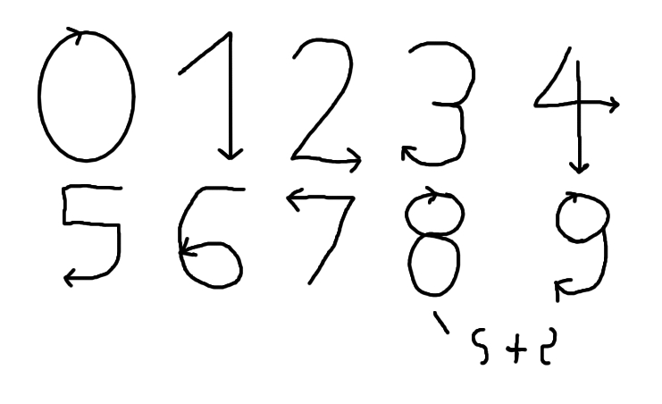

Math Magic
The only rule is to relax any tension, or anxiety regarding math, or learning in general. No homework or note-taking is necessary to study this section.
Numbers
There are 10 digits. Our common Arabic numerals notation. These are:
Zero, or 0, is known as never, or nothing.
One, or 1, is known as once, or unity.
Two, or 2, is known as double. This is known as duality.
Three, or 3, is known as triple. This is known as trinity, or, the universe.
Four, or 4, is known as quadruple. Four often symbolizes the cross, or binding due to ignorance.
Five, or 5, is known as quintuple. The pentagon symbolizes inner progress.
Six, or 6, is known as sextuple. The sixth point, added opposite the previous breaking out (5) often symbolizes a point of stagnation, or difficult choice.
Seven, or 7, is known as septuple. Septem in Latin, it is known as a number of awakening.
Eight, or 8, is known as octuple. It is the greatest challenge, for it's doubling of four's themes. Those that know how to love the number 4 need not fear, however.
Nine, or 9, is known as nonuple, or ninefold. The three points - Body, mind and spirit - have been balanced. The being that has begun to master this number has penetrated the eighth and accesses infinity itself. This leads to the level of sages. At an even higher level, one speaks like a God, and is seen by others to be God incarnate. This is the level of avatars, to which few have gone and of which there is little to report.